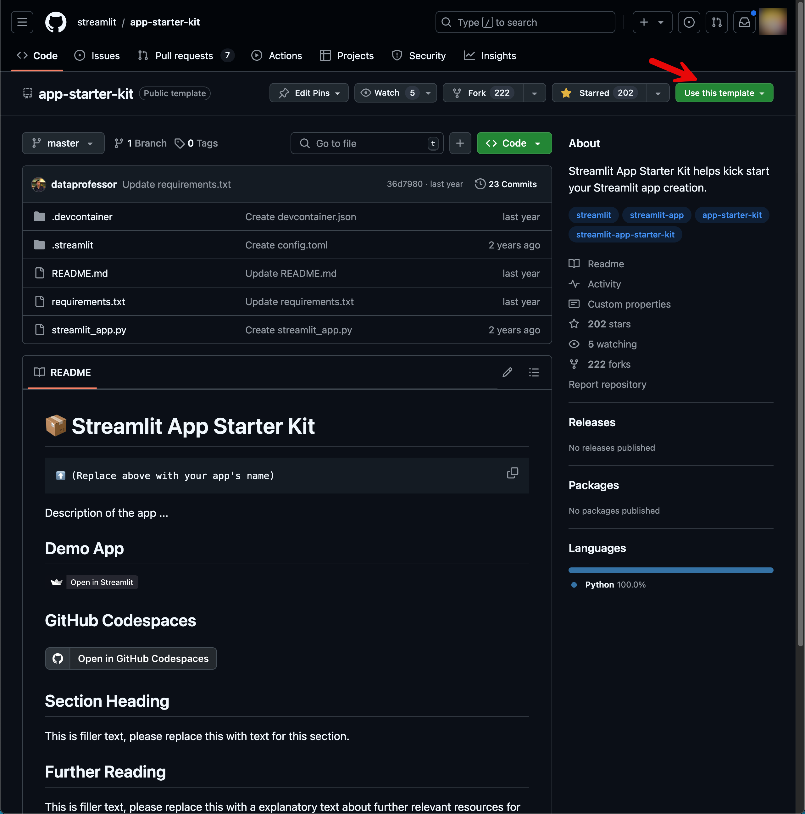

Setup¶
By the end of this chapter, you will have successfully created and set up a GitHub project using the Stream Starter Kit. This starter kit provides a solid foundation for building interactive web applications with Streamlit, a powerful Python library for creating data-driven apps.
In this chapter, we will guide you through the following steps:
- Forking the Stream Starter Kit repository to your GitHub account
- Cloning the forked repository to your local machine
- Configuring the project settings
- Optionally Running the starter app locally to ensure everything is set up correctly
Let's get started!
What is required¶
To follow along with this tutorial and set up your project successfully, you'll need the following tools and accounts:
-
A GitHub account: If you don't already have a GitHub account, you'll need to create one.
-
Snowflake Account: Snowflake is a cloud-based data warehousing platform. You'll need to sign up for a Snowflake account to access and query your data from within your Streamlit app.
-
Snowflake CLI: The Snowflake Command Line Interface (CLI) is a tool that allows you to interact with Snowflake from the command line. You'll use this to set up connections and configure your Snowflake account.
-
Latest Chrome Browser
Please ensure you have all these tools and accounts set up before proceeding with the tutorial. In the following sections, we'll guide you through the process of setting up your GitHub project using the Stream Starter Kit.
Create Project¶
Let us create a base Streamlit project from scratch using Streamlit application starter kit.
Navigate to the folder where you want to create the tutorial
Create the application folder,
You can either use the repo https://github.com/streamlit/app-starter-kit as a template,

Once you fork the repository clone the same to $TUTORIAL_HOME.
(OR)
We can use GitHub CLI and do the same as follows:
Create an the remote Git Repository from the template,
Clone the created repository to current directory,
Choice of Development Environment¶
This tutorial can be run in many ways
- Locally on your machine installing all tools
- Using DevContainer. The project is also enabled with DevContainers.
- Using GitHub Codespaces
For rest of the demo we will run all exercises locally on our machines.
Open the $TUTORIAL_HOME in Visual Studio Code.
Once you have all that lets get to next chapter where we will deploy the bare bone application Streamlit community cloud.